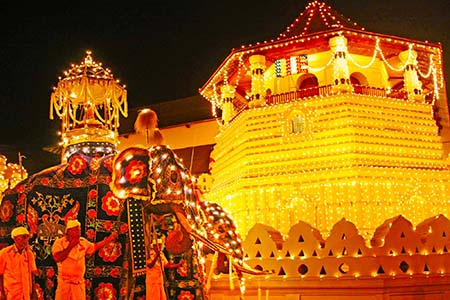

Inheritance of the culture
The culture of Sri Lanka mixes modern elements with traditional
aspects and is known for its regional diversity. Sri Lankan culture
has long been influenced by the heritage of Theravada Buddhism
passed on from India, and the religion's legacy is particularly
strong in Sri Lanka's southern and central regions.
Cultural festivals in Sri Lanka

Sinhala tamil new year

Esala perahara
wesak poya